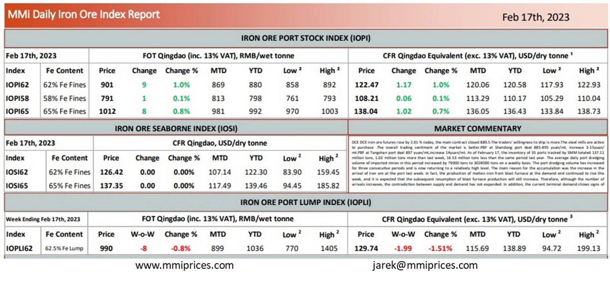

DCE DCE iron ore futures rose by 2.01 % today, the main contract closed 889.5.The traders’ willingness to ship is more.The steel mills are active to purchase.The overall trading sentiment of the market is better.PBF at Shandong port deal 885-895 yuan/mt, increase 3-15yuan/ mt.PBF at Tangshan port deal 897 yuan/mt,increase 14yuan/mt. As of February 17, the inventory of 35 ports tracked by SMM totaled 137.11 million tons, 1.02 million tons more than last week, 16.53 million tons less than the same period last year. The average daily port dredging volume of imported mines in this period increased by 79000 tons to 3028000 tons on a weekly basis. The port dredging volume has increased for three consecutive periods and is now returning to a relatively high level. The main reason for the accumulation was the increase in the arrival of iron ore at the port last week. In fact, the production of molten iron from blast furnace at the demand end continued to rise this week, and it is expected that the subsequent resumption of blast furnace production will still increase. Therefore, although the number of arrivals increases, the contradiction between supply and demand has not expanded. In addition, the current terminal demand shows signs of.

Download PDFSource: Metals Market Index (MMi)